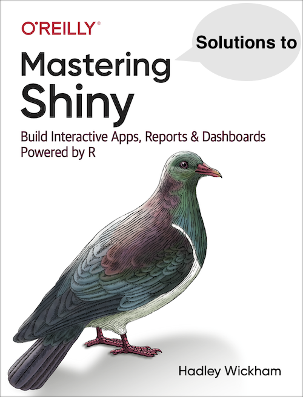

Welcome
This is the website for Mastering Shiny Solutions, a solutions manual for the exercises in Mastering Shiny, written by Hadley Wickham.
Mastering Shiny Solutions 2021, by Maya Gans and Marly Gotti, was released in early 2021. Since then, there have been various changes to the exercises in Mastering Shiny, and this book serves as an updated version. A few solutions in this book defer to those provided in Mastering Shiny Solutions 2021. Also, some exercises don’t contain solutions, and for these exercises, the author writes, “Not sure.”
If my work has helped you, you can buy me a coffee on Ko-fi!
Acknowledgments
The author is grateful for Hadley Wickham writing Mastering Shiny and making it available online. Alison Hill and Desirée De Leon’s talk, Sharing on Short Notice, made getting this book online smooth and easy.
(PART) Getting started
1 Your first Shiny app
1.8 Exercises
library(shiny)
ui <- fluidPage(
textInput("name", "What's your name?"),
textOutput("greeting")
)
server <- function(input, output, session) {
output$greeting <- renderText({
paste0("Hello ", input$name)
})
}
shinyApp(ui, server)library(shiny)
ui <- fluidPage(
sliderInput("x", label = "If x is", min = 1, max = 50, value = 30),
"then x times 5 is",
textOutput("product")
)
server <- function(input, output, session) {
output$product <- renderText({
# Fixed error
input$x * 5
# by adding input$
})
}
shinyApp(ui, server)library(shiny)
ui <- fluidPage(
sliderInput("x", label = "If x is", min = 1, max = 50, value = 30),
sliderInput("y", label = "and y is", min = 1, max = 50, value = 30),
"then x times y is",
textOutput("product")
)
server <- function(input, output, session) {
output$product <- renderText({
input$x * input$y
})
}
shinyApp(ui, server)library(shiny)
ui <- fluidPage(
sliderInput("x", "If x is", min = 1, max = 50, value = 30),
sliderInput("y", "and y is", min = 1, max = 50, value = 5),
"then, (x * y) is", textOutput("product"),
"and, (x * y) + 5 is", textOutput("product_plus5"),
"and (x * y) + 10 is", textOutput("product_plus10")
)
server <- function(input, output, session) {
# Add this reactive expression to reduce
# amount of duplicated code
product <- reactive({
input$x * input$y
})
output$product <- renderText({
product()
})
output$product_plus5 <- renderText({
product() + 5
})
output$product_plus10 <- renderText({
product() + 10
})
}
shinyApp(ui, server)- What’s new is the additional calculation where 5 and 10 were added to the product and the outputs rendered as text.
library(shiny)
library(ggplot2)
datasets <- c("economics", "faithfuld", "seals")
ui <- fluidPage(
selectInput("dataset", "Dataset", choices = datasets),
verbatimTextOutput("summary"),
# 1st Bug: tableOutput -> plotOutput
plotOutput("plot")
)
server <- function(input, output, session) {
dataset <- reactive({
get(input$dataset, "package:ggplot2")
})
# Fixed spelling
output$summary <- renderPrint({
summary(dataset())
})
output$plot <- renderPlot({
# dataset -> dataset() because its a reactive
plot(dataset())
}, res = 96)
}
shinyApp(ui, server)2 Basic UI
2.2.8 Exercises
You can fill in the parameter,
value, insidetextInput():textInput("name", value = "Your name)
library(shiny)
ui <- fluidPage(
sliderInput(inputId = "user_input",
label = "User Input",
value = 10,
min = 0, max = 100,
step = 5,
# Added animation
animate = animationOptions(
interval = 1000,
loop = TRUE,
playButton = NULL,
pauseButton = NULL
)
)
)
server <- function(input, output, session) {}
shinyApp(ui, server)- The documentation states, “It’s also possible to group related inputs by providing a named list whose elements are (either named or unnamed) lists, vectors, or factors. In this case, the outermost names will be used as the group labels (leveraging the
<optgroup>HTML tag) for the elements in the respective sublist. See the example section for a small demo of this feature.”
2.3.5 Exercises
renderPrint(summary(mtcars))should be paired withverbatimTextOutputsince it is console output.renderText("Good morning!")should be paired withtextOutputsince it is regular textrenderPrint(t.test(1:5, 2:6))should be paired withverbatimTextOutputsince it is console output.renderText(str(lm(mpg ~ wt, data = mtcars)))should be paired withverbatimTextOutputsince it is console output.
library(shiny)
ui <- fluidPage(
plotOutput("plot", width = "700px", height = "300px")
)
server <- function(input, output, session) {
output$plot <- renderPlot(plot(1:5), res = 96,
alt = "Scatterplot of 5 random numbers")
}
shinyApp(ui, server)library(shiny)
ui <- fluidPage(
dataTableOutput("table")
)
server <- function(input, output, session) {
output$table <- renderDataTable(mtcars,
options = list(pageLength = 5,
ordering = FALSE,
searching = FALSE))
}
shinyApp(ui, server)library(shiny)
library(reactable)
ui <- fluidPage(
reactableOutput("table")
)
server <- function(input, output) {
output$table <- renderReactable({
reactable(mtcars)
})
}
shinyApp(ui, server)3 Basic reactivity
3.3.6 Exercises
server1 <- function(input, output, server) {
input$greeting <- renderText(paste0("Hello ", name))
}input$greeting–>output$greeting- Inside
renderText,name–>input$name - Fixed code:
output$greeting <- renderText(paste0("Hello ", input$name))
server2 <- function(input, output, server) {
greeting <- paste0("Hello ", input$name)
output$greeting <- renderText(greeting)
}- You can make
greetinga reactive by addingreactive():greeting <- reactive(paste0("Hello ", input$name)) - Since
greetingis now a reactive, you need to add parenthesis around it:output$greeting <- renderText(greeting())
server3 <- function(input, output, server) {
output$greting <- paste0("Hello", input$name)
}- Spelling error:
output$greting–>output$greeting - Missing
renderText() - Fixed code:
output$greeting <- renderText(paste0("Hello ", input$name))
- Solution at Mastering Shiny Solutions 2021
- Code will fail because of df[[input$var]]. When you use
range()orvar(), other readers won’t know if you are using a reactive or the built-in R function.
4 Case study: ER injuries
4.8 Exercises
Solution at Mastering Shiny Solutions 2021
injuries <- vroom::vroom("neiss/injuries.tsv.gz")
injuries
# Original code
injuries %>%
mutate(diag = fct_lump(fct_infreq(diag), n = 5)) %>%
group_by(diag) %>%
summarise(n = as.integer(sum(weight)))
# Flipped code
injuries %>%
mutate(diag = fct_infreq(fct_lump(diag, n = 5))) %>%
group_by(diag) %>%
summarise(n = as.integer(sum(weight)))If you flip fct_infreq() and fct_lump(), than you order the output by the sum of the weight of each diagnosis.
library(dplyr)
library(ggplot2)
library(forcats)
library(vroom)
library(shiny)
if (!exists("injuries")) {
injuries <- vroom::vroom("neiss/injuries.tsv.gz")
products <- vroom::vroom("neiss/products.tsv")
population <- vroom::vroom("neiss/population.tsv")
}
ui <- fluidPage(
#<< first-row
fluidRow(
column(8,
selectInput("code", "Product",
choices = setNames(products$prod_code, products$title),
width = "100%"
)
),
column(2, selectInput("y", "Y axis", c("rate", "count"))),
# Input control that lets the user decide how many rows to show in the summary tables
column(2, numericInput("num_rows", "Number of Rows", value = 5, min = 0, max = 6))
),
#>>
fluidRow(
column(4, tableOutput("diag")),
column(4, tableOutput("body_part")),
column(4, tableOutput("location"))
),
fluidRow(
column(12, plotOutput("age_sex"))
),
#<< narrative-ui
fluidRow(
column(2, actionButton("story", "Tell me a story")),
column(10, textOutput("narrative"))
)
#>>
)
count_top <- function(df, var, n = 5) {
df %>%
mutate({{ var }} := fct_lump(fct_infreq({{ var }}), n = n)) %>%
group_by({{ var }}) %>%
summarise(n = as.integer(sum(weight)))
}
server <- function(input, output, session) {
selected <- reactive(injuries %>% filter(prod_code == input$code))
#<< tables
output$diag <- renderTable(count_top(selected(), diag) %>% slice(1:input$num_rows), width = "100%")
output$body_part <- renderTable(count_top(selected(), body_part) %>% slice(1:input$num_rows), width = "100%")
output$location <- renderTable(count_top(selected(), location) %>% slice(1:input$num_rows), width = "100%")
#>>
summary <- reactive({
selected() %>%
count(age, sex, wt = weight) %>%
left_join(population, by = c("age", "sex")) %>%
mutate(rate = n / population * 1e4)
})
#<< plot
output$age_sex <- renderPlot({
if (input$y == "count") {
summary() %>%
ggplot(aes(age, n, colour = sex)) +
geom_line() +
labs(y = "Estimated number of injuries")
} else {
summary() %>%
ggplot(aes(age, rate, colour = sex)) +
geom_line(na.rm = TRUE) +
labs(y = "Injuries per 10,000 people")
}
}, res = 96)
#>>
#<< narrative-server
narrative_sample <- eventReactive(
list(input$story, selected()),
selected() %>% pull(narrative) %>% sample(1)
)
output$narrative <- renderText(narrative_sample())
#>>
}
shinyApp(ui, server)- Solution at Mastering Shiny Solutions 2021
(PART) Shiny in action
5 Workflow
There are no exercises in this chapter.
6 Layout, themes, HTML
6.2.4 Exercises
- Documentation on
sidebarLayout(): “By default, the sidebar takes up 1/3 of the width, and the main panel 2/3.” In other words, given the width is 12 columns, the sidebar is made up of 4 columns and the main panel 8 columns.
# Recreate sidebarLayout()
fluidRow(
# sidebar (4 columns)
column(4,
...
),
# # main panel (8 columns)
column(8,
...
)
)library(shiny)
ui <- fluidPage(
titlePanel("Central limit theorem"),
sidebarLayout(
sidebarPanel(
numericInput("m", "Number of samples:", 2, min = 1, max = 100)
),
mainPanel(
plotOutput("hist")
),
# Modified to put position of sidebar on the right
position = "right"
)
)
server <- function(input, output, session) {
output$hist <- renderPlot({
means <- replicate(1e4, mean(runif(input$m)))
hist(means, breaks = 20)
}, res = 96)
}
shinyApp(ui, server)# UI ONLY
library(shiny)
library(ggplot2)
dataset <- diamonds
ui <- fluidPage(
title = "Diamonds Explorer",
fluidRow(
column(6,
# First plot taking up half the width
plotOutput("plot1")
),
column(6,
# Second plot taking up half the width
plotOutput("plot2")
)
),
# Horizontal Line
hr(),
fluidRow(
column(3,
h4("Diamonds Explorer"),
sliderInput('sampleSize', 'Sample Size',
min=1, max=nrow(dataset), value=min(1000, nrow(dataset)),
step=500, round=0),
br(),
checkboxInput('jitter', 'Jitter'),
checkboxInput('smooth', 'Smooth')
),
column(4, offset = 1,
selectInput('x', 'X', names(dataset)),
selectInput('y', 'Y', names(dataset), names(dataset)[[2]]),
selectInput('color', 'Color', c('None', names(dataset)))
),
column(4,
selectInput('facet_row', 'Facet Row', c(None='.', names(dataset))),
selectInput('facet_col', 'Facet Column', c(None='.', names(dataset)))
)
)
)
shinyApp(ui, server)7 Graphics
There are no exercises in this chapter
8 User feedback
There are no exercises in this chapter.
9 Uploads and downloads
9.4 Exercises
library(shiny)
# Increase max limit of size of uploaded file
options(shiny.maxRequestSize = 10 * 1024^2)
ui <- fluidPage(
# upload a csv file
fileInput("upload", NULL,
buttonLabel = "Upload CSV", accept = ".csv"),
# select a variable
selectInput("var", "Select a variable", choices = NULL),
# show output of t.test()
verbatimTextOutput("t_test")
)
server <- function(input, output, session) {
# uploaded dataset
data <- reactive({
req(input$upload)
readr::read_csv(input$upload$datapath)
})
# once user uploads data, fill in the available variables
observeEvent(data(), {
choices <- unique(colnames(data()))
updateSelectInput(inputId = "var", choices = choices)
})
# show output of t-test
output$t_test <- renderPrint({
req(input$var)
t.test(data()[[input$var]], mu = 0)
})
}
shinyApp(ui, server)library(shiny)
library(tidyverse)
ui <- fluidPage(
# upload a csv file
fileInput("upload", NULL,
buttonLabel = "Upload CSV", accept = ".csv"),
# select a variable
selectInput("var", "Select a variable", choices = NULL),
# show histogram
plotOutput("plot"),
radioButtons("ext", "Save As:",
choices = c("png", "pdf", "svg"), inline = TRUE),
# download histogram
downloadButton("download")
)
server <- function(input, output, session) {
# uploaded dataset
data <- reactive({
req(input$upload)
read_csv(input$upload$datapath)
})
# once user uploads data, fill in the available variables
observeEvent(data(), {
choices <- unique(colnames(data()))
updateSelectInput(inputId = "var", choices = choices)
})
# create reactive plot
plot_output <- reactive({
req(input$var)
ggplot(data()) +
geom_histogram(aes(.data[[input$var]]))
})
# show histogram
output$plot <- renderPlot({
req(input$var)
plot_output()
})
# download
output$download <- downloadHandler(
filename = function() {
paste("histogram", input$ext, sep = ".")
},
content = function(file) {
ggsave(file, plot_output(), device = input$ext)
}
)
}
shinyApp(ui, server)library(shiny)
library(brickr)
library(png)
# Function to provide user feedback (checkout Chapter 8 for more info).
notify <- function(msg, id = NULL) {
showNotification(msg, id = id, duration = NULL, closeButton = FALSE)
}
ui <- fluidPage(
sidebarLayout(
sidebarPanel(
fluidRow(
fileInput("myFile", "Upload a PNG file", accept = c('image/png')),
sliderInput("size", "Select size:", min = 1, max = 100, value = 35),
radioButtons("color", "Select color palette:", choices = c("universal", "generic"))
)
),
mainPanel(
plotOutput("result"))
)
)
server <- function(input, output) {
imageFile <- reactive({
if(!is.null(input$myFile))
png::readPNG(input$myFile$datapath)
})
output$result <- renderPlot({
req(imageFile())
id <- notify("Transforming image...")
on.exit(removeNotification(id), add = TRUE)
imageFile() %>%
image_to_mosaic(img_size = input$size, color_palette = input$color) %>%
build_mosaic()
})
}
shinyApp(ui, server)- Not sure
10 Dynamic UI
10.1.6 Exercises
library(shiny)
ui <- fluidPage(
numericInput("year", "year", value = 2020),
dateInput("date", "date")
)
server <- function(input, output, session) {
# MSS 2021
observeEvent(input$year, {
req(input$year)
date_range <- range(as.Date(paste0(input$year, "-01-01")),
as.Date(paste0(input$year, "-12-31")))
updateDateInput(session, "date",
min = date_range[1],
max = date_range[2]
)
})
}
shinyApp(ui, server)library(shiny)
library(tidyverse)
library(openintro, warn.conflicts = FALSE)
# MSS 2021
states <- unique(county$state)
ui <- fluidPage(
selectInput("state", "State", choices = states),
selectInput("county", "County", choices = NULL)
)
server <- function(input, output, session) {
observeEvent(input$state, {
req(input$state)
# pull out county names
choices <- county %>%
filter(state == input$state) %>%
pull(name) %>%
unique()
updateSelectInput(inputId = "county", choices = choices)
})
}
shinyApp(ui, server)library(shiny)
library(gapminder)
continents <- unique(gapminder$continent)
ui <- fluidPage(
# add "(All)" to the list of choices
selectInput("continent", "Continent", choices = continents),
selectInput("country", "Country", choices = NULL),
tableOutput("data")
)
server <- function(input, output, session) {
observeEvent(input$continent, {
req(input$continent)
# pull out country names
choices <- gapminder %>%
filter(continent == input$continent) %>%
pull(country) %>%
unique()
updateSelectInput(inputId = "country", choices = choices)
})
output$data <- renderTable({
gapminder %>%
filter(continent == input$continent,
country == input$country)
})
}
shinyApp(ui, server)library(shiny)
library(gapminder)
continents <- unique(gapminder$continent)
ui <- fluidPage(
# add "(All)" to the list of choices
selectInput("continent", "Continent", choices = c(as.character(continents), "(All)")),
selectInput("country", "Country", choices = NULL),
tableOutput("data")
)
server <- function(input, output, session) {
observeEvent(input$continent, {
req(input$continent)
if (input$continent == "(All)") {
# pull out country names
choices <- gapminder %>%
pull(country) %>%
unique()
updateSelectInput(inputId = "country", choices = choices)
} else {
# pull out country names
choices <- gapminder %>%
filter(continent == input$continent) %>%
pull(country) %>%
unique()
updateSelectInput(inputId = "country", choices = choices)
}
})
output$data <- renderTable({
if (input$continent == "(All)") {
gapminder %>%
filter(country == input$country)
} else {
gapminder %>%
filter(continent == input$continent,
country == input$country)
}
})
}
shinyApp(ui, server)library(shiny)
u <- shinyUI(fluidPage(
titlePanel("Mutually Dependent Input Values"),
sidebarLayout(
sidebarPanel(
numericInput("A", "A",.333),
numericInput("B", "B",.333),
numericInput("C", "C",.333)
),
mainPanel(
verbatimTextOutput("result")
)
)
))
s <- shinyServer(function(input, output,session) {
observeEvent(input$A,{
newB <- 1 - input$A - input$C
updateNumericInput(session, "B", value = newB)
newC <- 1 - input$A - input$B
updateNumericInput(session, "C", value = newC)
})
observeEvent(input$B,{
newC <- 1 - input$B - input$A
updateNumericInput(session, "C", value = newC)
newA <- 1 - input$B - input$C
updateNumericInput(session, "A", value = newA)
})
observeEvent(input$C,{
newA <- 1 - input$C - input$B
updateNumericInput(session, "A", value = newA)
newB <- 1 - input$C - input$C
updateNumericInput(session, "B", value = newB)
})
})
shinyApp(u,s)Circular reference seems to be the issue. Once you run this app, the numeric inputs continue to update autonomously.
10.1.6 Exercises
library(shiny)
library(tidyverse)
# Put the unique user interface for each geom in its own tabPanel(),
# and then arrange the three tabs into a tabsetPanel()
parameter_tabs <- tabsetPanel(
id = "params",
type = "hidden",
tabPanel("geom_histogram",
numericInput("binwidth_hist", "binwidth", value = 0.2)
),
tabPanel("geom_freqpoly",
numericInput("binwidth_freq", "binwidth", value = 0.2)
),
tabPanel("geom_density",
numericInput("bw_density", "bandwidth", value = 1),
)
)
ui <- fluidPage(
sidebarLayout(
sidebarPanel(
selectInput("geom", "Select geom",
choices = c("geom_histogram",
"geom_freqpoly",
"geom_density")
),
parameter_tabs
),
mainPanel(
plotOutput("final_plot")
)
)
)
server <- function(input, output, session) {
# Change tabs depending on geom
observeEvent(input$geom, {
updateTabsetPanel(inputId = "params", selected = input$geom)
})
# Reactive plot
final_plot <- reactive({
switch(input$geom,
geom_histogram = ggplot(diamonds, aes(carat)) + geom_histogram(binwidth = input$binwidth_hist),
geom_freqpoly = ggplot(diamonds, aes(carat)) + geom_freqpoly(binwidth = input$binwidth_freq),
geom_density = ggplot(diamonds, aes(carat)) + geom_density(bw = input$bw_density),
)
})
# Plot
output$final_plot <- renderPlot(final_plot(), res = 96)
}
shinyApp(ui, server)- Not sure about this question, but I thought of using
checkboxInput()
10.3.5 Exercises
library(shiny)
parameter_tabs <- tabsetPanel(
id = "params",
type = "hidden",
tabPanel("slider",
sliderInput("n", "n", value = 0, min = 0, max = 100)
),
tabPanel("numeric",
numericInput("n", "n", value = 0, min = 0, max = 100)
)
)
ui <- fluidPage(
selectInput("type", "type", c("slider", "numeric")),
parameter_tabs
)
server <- function(input, output, session) {
# Change tabs depending on type
observeEvent(input$type, {
updateTabsetPanel(inputId = "params", selected = input$type)
})
}
shinyApp(ui, server)library(shiny)
ui <- fluidPage(
actionButton("go", "Enter password"),
textOutput("text")
)
server <- function(input, output, session) {
observeEvent(input$go, {
showModal(modalDialog(
passwordInput("password", NULL),
title = "Please enter your password"
))
})
output$text <- renderText({
if (!isTruthy(input$password)) {
"No password"
} else {
"Password entered"
}
})
}
shinyApp(ui, server)This app has an action button titled “Enter password.” Once we click on the button, we are shown a dialog box where we can enter our password. After we enter our password, we see a new message: “Password entered.” When you click the enter password button a second time, we make the input$password NULL again, making the password disappear.
You lose the currently selected value. It ensures that we don’t create a reactive dependency that would cause this code to re-run every time
input$dynamicchanges (which will happen whenever the user modifies the value). We only want it to change wheninput$typeorinput$labelchanges.Solution at Mastering Shiny Solutions 2021
11 Bookmarking
11.3 Exercises
library(ambient)
simplex <- noise_simplex(c(500, 500), pertubation = 'normal',
pertubation_amplitude = 40)
plot(as.raster(normalise(simplex)))library(shiny)
library(ambient)
ui <- function(request) {
fluidPage(
sidebarLayout(
sidebarPanel(
sliderInput("freq", "frequency", value = 1, min = -2, max = 2, step = 0.01),
selectInput("fractal", "fractal", choices = c("none", "fbm", "billow", "rigid-multi"), selected = "fbm"),
sliderInput("lac", "lacunarity", value = 2, min = 0, max = 5, step = 0.001),
sliderInput("gain", "gain", value = 0.5, min = 0, max = 1, step = 0.001),
bookmarkButton()
),
mainPanel(
plotOutput("fig")
)
)
)
}
server <- function(input, output, session) {
simplex <- reactive({
noise_simplex(dim = c(100, 100),
frequency = input$freq,
fractal = input$fractal,
lacunarity = input$lac,
gain = input$gain)
})
output$fig <- renderPlot({
plot(as.raster(normalise(simplex())))
}, res = 96)
}
shinyApp(ui, server, enableBookmarking = "url")library(shiny)
ui <- function(request) {
fluidPage(
fileInput("upload", "Upload CSV file", accept = ".csv", multiple = TRUE),
bookmarkButton()
)
}
server <- function(input, output, session) {
output$head <- renderTable({
head(data(), input$n)
})
}
shinyApp(ui, server, enableBookmarking = "server")readRDS("shiny_bookmarks/cf6669ac8bfa4888/input.rds") gives me a list with one dataframe, upload, with the name, size, type, and datapath of the uploaded datasets. Also, the uploaded datasets are saved inside shiny_bookmarks as 0.csv and 1.csv.
12 Tidy evaluation
There are no exercises in this chapter.
(PART) Mastering reactivity
13 Why reactivity?
There are no exercises in this chapter.
14 The reactive graph
14.4.5 Exercises
1.

- Reactives are not run because there are no outputs. Server function only contains inputs and reactive expressions.
Not sure
When we start the session,
ywould not exist and thusy()would return an error sinceyis a reactive expression that consists of itself.
15 Reactive building blocks
15.1.1 Exercises
l1is a reactive values class with values a and b, whereasl2is a list with a, areactiveValand b, areactiveVal.
l1 <- reactiveValues(a = 1, b = 2)
l2 <- list(a = reactiveVal(1), b = reactiveVal(2))
# get reactive values in l1
l1$a
l1$b
# set reactive values in l1
l1$a <- 10
l1$b <- 20
# get reactive values in l2
l2$a()
l2$b()
# set reactive values in l2
l2$a(10)
l2$b(20)- Not sure.
15.2.3 Exercises
library(shiny)
ui <- fluidPage(
checkboxInput("error", "error?"),
textOutput("result")
)
server <- function(input, output, session) {
a <- reactive({
if (req(input$error, cancelOutput = TRUE)) {
"Error!"
} else {
1
}
})
b <- reactive(a() + 1)
c <- reactive(b() + 1)
output$result <- renderText(c())
}
shinyApp(ui, server)- If I use
req()and remove thestop(), I get an error message:Error: non-numeric argument to binary operator. - Not sure about what happens when I use
cancelOutputargument, but the documentation states: “When req(…, cancelOutput = TRUE) is used, the”silent” exception is also raised, but it is treated slightly differently if one or more outputs are currently being evaluated. In those cases, the reactive chain does not proceed or update, but the output(s) are left is whatever state they happen to be in (whatever was their last valid state).”
15.4.3 Exercises
library(shiny)
ui <- fluidPage(
numericInput("x", "x", value = 50, min = 0, max = 100),
actionButton("capture", "capture"),
textOutput("out")
)
server <- function(input, output, session) {
df <- eventReactive(input$capture, {
input$x
})
output$out <- renderText({ df() })
}
shinyApp(ui, server)15.5.4 Exercises
- There is no output?
library(shiny)
ui <- fluidPage(
textInput("name", "name"),
actionButton("add", "add"),
actionButton("del", "delete"),
textOutput("names")
)
server <- function(input, output, session) {
r <- reactiveValues(names = character())
observeEvent(input$add, {
r$names <- union(r$names, input$name)
updateTextInput(session, "name", value = "")
})
observeEvent(input$del, {
r$names <- setdiff(r$names, input$name)
updateTextInput(session, "name", value = "")
})
output$names <- renderText(r$names)
}
shinyApp(ui, server)16 Escaping the graph
16.3.4 Exercises
library(shiny)
ui <- fluidPage(
actionButton("rnorm", "Normal"),
actionButton("runif", "Uniform"),
plotOutput("plot")
)
server <- function(input, output, session) {
r <- reactiveValues(random_data = vector(mode = "numeric", length = 100))
observeEvent(input$rnorm, {
r$random_data <- rnorm(100)
})
observeEvent(input$runif, {
r$random_data <- runif(100)
})
output$plot <- renderPlot({
# Only show plot if input$rnorm
# OR input$runif is provided
req(input$rnorm | input$runif)
hist(r$random_data)
})
}
shinyApp(ui, server)library(shiny)
ui <- fluidPage(
selectInput("type", "type", c("Normal", "Uniform")),
actionButton("go", "go"),
plotOutput("plot")
)
server <- function(input, output, session) {
r <- reactiveValues(random_data = vector(mode = "numeric", length = 100))
observeEvent(input$go, {
if (input$type == "Normal") {
r$random_data <- rnorm(100)
} else {
r$random_data <- runif(100)
}
})
output$plot <- renderPlot({
# Only show plot if "go" is clicked
req(input$go)
hist(r$random_data)
})
}
shinyApp(ui, server)- You can do that for the second UI but not the first because the second UI has the “go” actionButton.
library(shiny)
ui <- fluidPage(
selectInput("type", "type", c("Normal", "Uniform")),
actionButton("go", "go"),
plotOutput("plot")
)
server <- function(input, output, session) {
r <- reactive({
if (input$type == "Normal") {
rnorm(100)
} else if (input$type == "Uniform") {
runif(100)
}
})
output$plot <- renderPlot({
req(input$go)
hist(r())
})
}
shinyApp(ui, server)(PART) Best practices
17 General guidelines
There are no exercises in this chapter.
18 Functions
There are no exercises in this chapter.
19 Shiny modules
19.2.6 Exercises
- It is good practice to put a module in its own file in the
R/directory because of namespaces (“spaces” of “names” that are isolated from the rest of the app). Each module is an individual component in isolation from the other modules in the app. Namespacing makes it easier to understand how your app works because you can write, analyse, and test individual components in isolation. When you have the ui and server functions, you need to write a function that uses them to generate an app. See below for an example:
# Example of a function that generates an app
histogramApp <- function() {
ui <- fluidPage(
histogramUI("hist1")
)
server <- function(input, output, session) {
histogramServer("hist1")
}
shinyApp(ui, server)
}histogramUI <- function(id) {
tagList(
selectInput("var", "Variable", choices = names(mtcars)),
numericInput("bins", "bins", value = 10, min = 1),
plotOutput("hist")
)
}It fails to wrap each existing ID in a call to NS(), so that (e.g.) “var” turns into NS(id, “var”). See below for fixed version:
histogramUI <- function(id) {
tagList(
selectInput(NS(id, "var"), "Variable", choices = names(mtcars)),
numericInput(NS(id, "bins"), "bins", value = 10, min = 1),
plotOutput(NS(id, "hist"))
)
}- The following module generates a new random number every time you click go
randomUI <- function(id) {
tagList(
textOutput(NS(id, "val")),
actionButton(NS(id, "go"), "Go!")
)
}
randomServer <- function(id) {
moduleServer(id, function(input, output, session) {
rand <- eventReactive(input$go, sample(100, 1))
output$val <- renderText(rand())
})
}library(shiny)
randomApp <- function() {
ui <- fluidPage(
randomUI("rand1"),
randomUI("rand2"),
randomUI("rand3"),
randomUI("rand4")
)
server <- function(input, output, session) {
randomServer("rand1")
randomServer("rand2")
randomServer("rand3")
randomServer("rand4")
}
shinyApp(ui, server)
}
randomApp()We know that each module is independent because each returns a different random number when you click go.
In the Module UI Section, we learn that it’s the responsibility of the person calling the module UI to wrap the result in a layout function like column() or fluidRow() according to their needs. In our problem, we wrap the result in
fluidRow()andcolumn()to make the display more attractive.
# module UI
randomUI <- function(id) {
fluidRow(
column(width = 1,
textOutput(NS(id, "val"))),
column(width = 11,
actionButton(NS(id, "go"), "Go!"))
)
}
# module server
randomServer <- function(id) {
moduleServer(id, function(input, output, session) {
rand <- eventReactive(input$go, sample(100, 1))
output$val <- renderText(rand())
})
}library(shiny)
# generate app
randomApp <- function() {
ui <- fluidPage(
randomUI("rand1"),
randomUI("rand2"),
randomUI("rand3"),
randomUI("rand4")
)
server <- function(input, output, session) {
randomServer("rand1")
randomServer("rand2")
randomServer("rand3")
randomServer("rand4")
}
shinyApp(ui, server)
}
randomApp()19.3.7 Exercises
Not sure.
library(shiny)
library(tidyverse)
# Module: Upload dataset----
datasetInput <- function(id) {
fileInput(NS(id, "upload"), "Upload a file")
}
datasetServer <- function(id) {
moduleServer(id, function(input, output, session) {
reactive({
req(input$upload)
read_csv(input$upload$datapath)
})
})
}
# Module: Select numeric variables---
numericVarSelectInput <- function(id) {
selectInput(NS(id, "var"), "Variable", choices = NULL)
}
find_vars <- function(data, filter) {
names(data)[vapply(data, filter, logical(1))]
}
numericVarSelectServer <- function(id, data, filter = is.numeric) {
moduleServer(id, function(input, output, session) {
observeEvent(data(), {
updateSelectInput(session, "var", choices = find_vars(data(), filter))
})
reactive(data()[[input$var]])
})
}
# Module: Summary----
summaryOutput <- function(id) {
tags$ul(
tags$li("Min: ", textOutput(NS(id, "min"), inline = TRUE)),
tags$li("Max: ", textOutput(NS(id, "max"), inline = TRUE)),
tags$li("Missing: ", textOutput(NS(id, "n_na"), inline = TRUE))
)
}
summaryServer <- function(id, var) {
moduleServer(id, function(input, output, session) {
rng <- reactive({
req(var())
range(var(), na.rm = TRUE)
})
output$min <- renderText(rng()[[1]])
output$max <- renderText(rng()[[2]])
output$n_na <- renderText(sum(is.na(var())))
})
}
# Generate app---
summaryApp <- function() {
ui <- fluidPage(
sidebarLayout(
sidebarPanel(
datasetInput("data"),
numericVarSelectInput("var"),
),
mainPanel(
summaryOutput("summary")
)
)
)
server <- function(input, output, session) {
data <- datasetServer("data")
x <- numericVarSelectServer("var", data)
summaryServer("summary", x)
}
shinyApp(ui, server)
}
summaryApp()library(shiny)
# Module UI---
ymdDateUI <- function(id, label) {
label <- paste0(label, " (yyyy-mm-dd)")
fluidRow(
textInput(NS(id, "date"), label),
textOutput(NS(id, "error"))
)
}
# Module server---
ymdDateServer <- function(id) {
moduleServer(id, function(input, output, session) {
# display a message if the entered value is not a valid date
# NOTE: I changed the render function to renderPrint after getting a
# weird error message with renderText. See below SO question:
# https://stackoverflow.com/questions/62814804/warning-error-in-cat-argument-1-type-list-cannot-be-handled-by-cat-no-s
output$error <- renderPrint({
# https://mastering-shiny.org/action-feedback.html?q=req()#req-and-validation
req(input$date,cancelOutput = TRUE)
date_mod <- strptime(input$date, "%Y-%m-%d")
if (is.na(date_mod)) {
print("Invalid date")
} else {
print(as.Date(date_mod))
}
})
})
}
# Generate app---
ymdDateApp <- function() {
ui <- fluidPage(
ymdDateUI("date", "Date")
)
server <- function(input, output, session) {
ymdDateServer("date")
}
shinyApp(ui, server)
}
ymdDateApp()20 Packages
There are no exercises in this chapter.
21 Testing
There are no exercises in this chapter.
22 Security
There are no exercises in this chapter.
23 Performance
There are no exercises in this chapter.